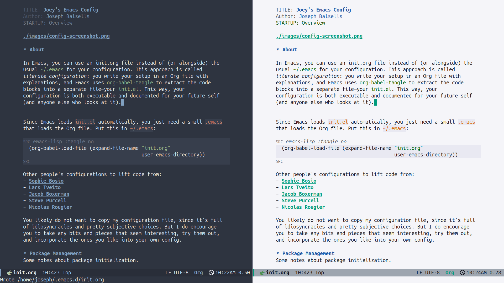

Joey's Emacs Config
Table of Contents

1. About
In Emacs, you can use an init.org file instead of (or alongside) the usual ~/.emacs for your configuration. This approach is called literate configuration: you write your setup in an Org file with explanations, and Emacs uses org-babel-tangle to extract the code blocks into a separate file—your init.el. This way, your configuration is both executable and documented for your future self (and anyone else who looks at it).
Since Emacs loads init.el automatically, you just need a small .emacs that loads the Org file. Put this in ~/.emacs:
(org-babel-load-file (expand-file-name "init.org"
user-emacs-directory))
Other people's configurations to lift code from:
You likely do not want to copy my configuration file, since it's full of idiosyncracies and pretty subjective choices. But I do encourage you to take any bits and pieces that seem interesting, try them out, and incorporate the ones you like into your own config.
2. Package Management
Some notes about package initialization.
;; Enable major package archives (require 'package) (setq package-archives '(("gnu" . "https://elpa.gnu.org/packages/") ("gnu-devel" . "https://elpa.gnu.org/devel/") ("nongnu" . "https://elpa.nongnu.org/nongnu/") ("melpa" . "https://melpa.org/packages/"))) (package-initialize) ;; Automatically install use-package the first time (unless (package-installed-p 'use-package) (package-refresh-contents) (package-install 'use-package)) (eval-when-compile (require 'use-package)) ;; every package auto-installs, lazy-loads, then native-compiles (setq use-package-always-ensure t ; fetch if missing use-package-always-defer t ; don’t load until needed use-package-always-compile t) ; build .eln/.elc once
3. Theme
I’m using the doom-nord theme, which is part of the doom-themes package. I find both it and several of the other themes from that pack to be excellent.
Places to find additiional themes:
- emacsthemes.com
- Prot’s Modus
- Ef themes.
Packages like org-modern make Org buffers prettier while editing
(use-package org-modern :hook (org-mode . org-modern-mode))
It’s common to hide emphasis markers (e.g., /.../ for italics, *...* for bold, etc.) to have a cleaner visual look, but this makes it harder to edit the text. org-appear is the solution to all my troubles. It displays the markers when the cursor is within them and hides them otherwise, making edits easy while looking pretty.
(use-package org-appear :commands (org-appear-mode) :hook (org-mode . org-appear-mode) :config (setq org-hide-emphasis-markers t) ; Must be activated (setq org-appear-autoemphasis t ; Show bold, italics, etc. org-appear-autolinks t ; Show links org-appear-autosubmarkers t)) ; Show sub- and superscripts
4. Centering & Linebreaks
(use-package olivetti :hook (org-mode . olivetti-mode))
5. UI Tweaks
(setq default-frame-alist '((fullscreen . maximized))) (when (display-graphic-p) (add-to-list 'default-frame-alist '(undecorated . t))) (tool-bar-mode 0) ;; Disable toolbar (scroll-bar-mode 0) ;; Disable scrollbars (menu-bar-mode 0) ;; Disable menu bar (fringe-mode 0) ;; Set fringe width 0,-1,20 (blink-cursor-mode 0) ;; Disable blinking cursor (global-visual-line-mode 1) ;; Enable line wrapping globally (set-face-attribute 'default nil :height 150) (setq column-number-mode t) (rainbow-delimiters-mode 1) (show-paren-mode 1)
A better-looking modeline. After installing the nerd-icons package run M-x nerd-icons-install-fonts.
(use-package nerd-icons :ensure t :if (display-graphic-p)) (use-package doom-modeline :ensure t :init (setq doom-modeline-icon t) ;; enable icons :hook (after-init . doom-modeline-mode))
Use a separate file for options set by customize
(setq custom-file (concat user-emacs-directory "custom.el")) (when (file-exists-p custom-file) (load custom-file))
;; Bookmarks ;; C-x r m - RET – bookmark the file that is open right now ;; C-x r b – jump to a bookmark - you should bookmark at least one file to go to that file ;; C-x r l – list your bookmarks (use-package dashboard :ensure t :demand t ;; load now, not lazily :init (setq dashboard-startup-banner (expand-file-name "images/black-hole.png" user-emacs-directory) dashboard-center-content t dashboard-items '((bookmarks . 5) (projects . 5) (recents . 5)) ) :config (dashboard-setup-startup-hook) :custom (dashboard-set-heading-icons t) (dashboard-set-file-icons t) ) ;; (use-package dashboard ;; :demand t ;; :after (all-the-icons) ;; icons must be loaded first ;; :hook (dashboard-mode . my/dashboard-extra-keys) ;; :custom ;; ;; ─ Appearance ─────────────────────────────────────────────────────── ;; (dashboard-startup-banner ;; (expand-file-name "black-hole.png" user-emacs-directory)) ;; (dashboard-center-content t) ;; ;; ─ Content ────────────────────────────────────────────────────────── ;; (dashboard-items '((bookmarks . 5) ;; (recents . 5))) ;; (dashboard-set-heading-icons t) ;; (dashboard-set-file-icons t) ;; :config ;; (dashboard-setup-startup-hook)) ;; (defun my/dashboard-extra-keys () ;; "Extra key bindings in *dashboard*." ;; ;; Quick-find like in Ranger ;; (local-set-key (kbd "/") #'find-file))
6. Better completion & buffer switching
(use-package vertico :ensure t :bind (:map minibuffer-local-map () ) :init (vertico-mode) :custom (vertico-count 20) ;; Show more candidates (vertico-resize t) ;; Grow and shrink the Vertico minibuffer ) (define-key vertico-map (kbd "TAB") #'vertico-insert) (define-key vertico-map (kbd "DEL") #'vertico-directory-delete-word)
6.1. Marginalia
Marginalia gives me annotations in the minibuffer.
(use-package marginalia :init (marginalia-mode 1))
6.2. ace-window
Quickly switch windows.
(use-package ace-window ;; :bind ("C-x o" . 'ace-window) :init (setq aw-keys '(?a ?s ?d ?f ?g ?h ?j ?k ?l)) ) ;;; ── beacon ───────────────────────────────────────────────────────── (use-package beacon :hook (after-init . beacon-mode))
(defun next-code-buffer () (interactive) (let (( bread-crumb (buffer-name) )) (next-buffer) (while (and (or (string-match-p "^\_" (buffer-name)) (string-match-p "^\*" (buffer-name))) (not ( equal bread-crumb (buffer-name) )) ) (next-buffer)))) (global-set-key (kbd "<C-right>") 'next-code-buffer) (defun previous-code-buffer () (interactive) (let (( bread-crumb (buffer-name) )) (previous-buffer) (while (and (or (string-match-p "^\_" (buffer-name)) (string-match-p "^\*" (buffer-name))) (not ( equal bread-crumb (buffer-name) )) ) (previous-buffer)))) (global-set-key (kbd "<C-left>") 'previous-code-buffer)
6.3. PDF Tools
PDF Tools is an improved version of the built-in DocView for viewing PDFs.
(use-package pdf-tools :defer t :init (pdf-loader-install) :hook ((pdf-view-mode . (lambda () (auto-revert-mode -1))) (pdf-view-mode . (lambda () (company-mode -1)))) :bind (:map pdf-view-mode-map ; ("C-s" . isearch-forward) ("C-M-s" . pdf-occur)))
Warn me when a PDF has been opened with the default DocView mode instead of PDF Tools' PDF View mode.
(use-package doc-view :hook (doc-view-mode . (lambda () (display-warning emacs "Oops, using DocView instead of PDF Tools!" :warning))))
saveplace-pdf-view is a great package that remembers where in your PDFs you last left off, down to the scroll position and zoom amount.
(use-package pdf-view-restore :after pdf-tools :config (add-hook 'pdf-view-mode-hook 'pdf-view-restore-mode))
(defun my-scroll-other-window-previous () (interactive) (other-window 1) (pdf-view-scroll-down-or-previous-page) (other-window 1)) (defun my-scroll-other-window-next () (interactive) (other-window 1) (pdf-view-scroll-up-or-next-page) (other-window 1)) (global-set-key (kbd "M-n") 'my-scroll-other-window-next) (global-set-key (kbd "M-p") 'my-scroll-other-window-previous)
7. Exporting init.org
The package htmlize allows you to export init.org to HTML with C-c C-e h h
(use-package htmlize :ensure t)
This package can be paired with CSS styling.
8. CSS Styling
(setq browse-url-browser-function 'browse-url-generic browse-url-generic-program "firefox") ;; or your browser (require 'ox-html) ;; Ensure htmlize is installed so exports use token classes (setq org-html-htmlize-output-type 'css) ;; Don’t include the default Org CSS/JS (setq org-html-head-include-default-style nil) (setq org-html-head-include-scripts nil) (setq org-html-htmlize-output-type 'css) ; use CSS classes (setq org-html-head-include-default-style nil) (setq org-html-head-include-scripts nil) (setq org-html-head "<meta name='viewport' content='width=device-width, initial-scale=1'> <style> /* --- Terminal-like look --- */ body { background: #1e1e1e; color: #d4d4d4; font-family: 'Fira Code', 'JetBrains Mono', 'Source Code Pro', monospace; line-height: 1.5; max-width: 860px; margin: 2rem auto; padding: 0 1rem; } h1,h2,h3,h4 { font-family: inherit; color: #00ff7f; border-left: 3px solid #00ff7f; padding-left: .5rem; } a { color: #569cd6; text-decoration: none; } a:hover { text-decoration: underline; } /* --- TOC --- */ #table-of-contents { background: #252526; border: 1px solid #333; padding: .75rem 1rem; border-radius: .5rem; } #table-of-contents h2 { color: #9cdcfe; border: none; } /* --- Code blocks --- */ pre.src { background: #0c0c0c; color: #d4d4d4; padding: .8rem 1rem; border-radius: .5rem; border: 1px solid #333; overflow-x: auto; } pre.src:before { content: attr(class); float: right; font-size: .75rem; color: #888; text-transform: uppercase; } code, tt { background: #252526; padding: .1rem .3rem; border-radius: .3rem; font-family: inherit; } /* --- Syntax colors from htmlize --- */ .org-keyword { color: #569cd6; } .org-function-name { color: #dcdcaa; } .org-variable-name { color: #9cdcfe; } .org-string { color: #ce9178; } .org-constant { color: #4ec9b0; } .org-type { color: #4ec9b0; } .org-builtin { color: #c586c0; } .org-comment { color: #6a9955; font-style: italic; } /* --- Tables --- */ table { border-collapse: collapse; margin: 1rem 0; } th, td { border: 1px solid #333; padding: .4rem .6rem; } th { background: #252526; color: #00ff7f; } </style>")